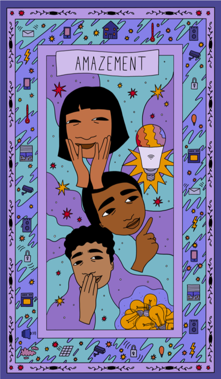
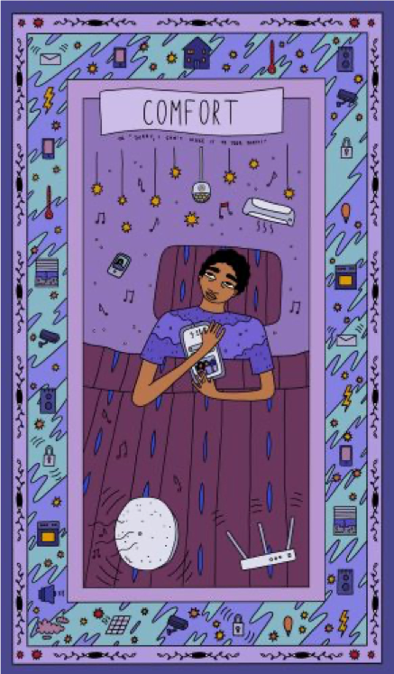
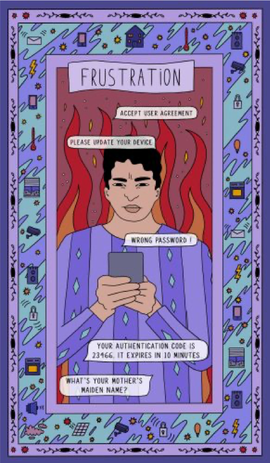
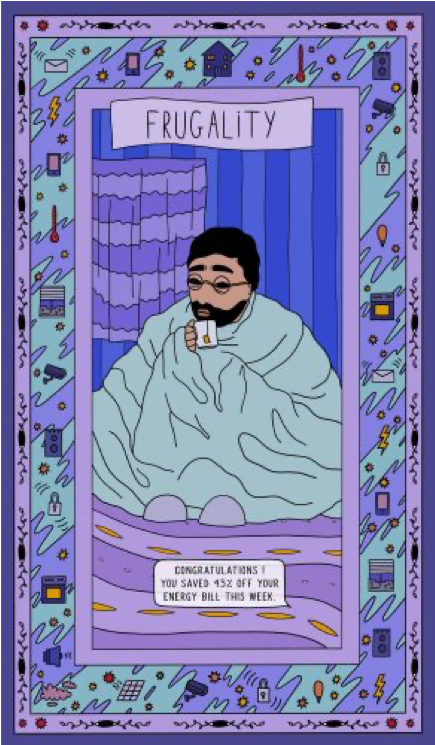
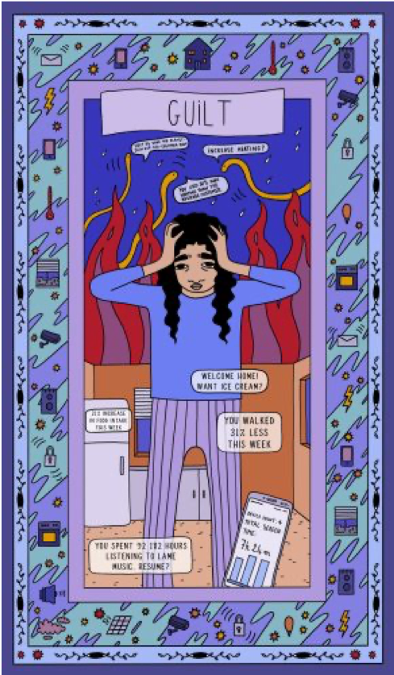
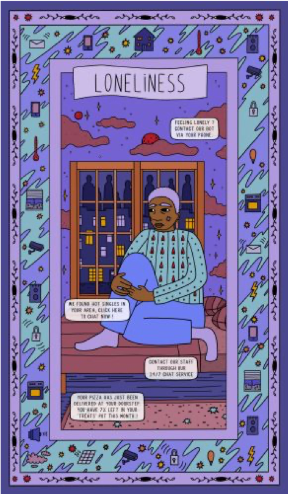
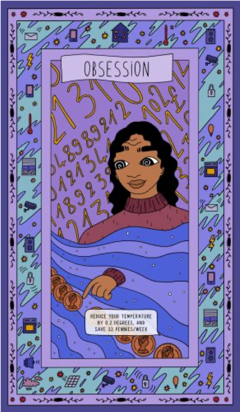
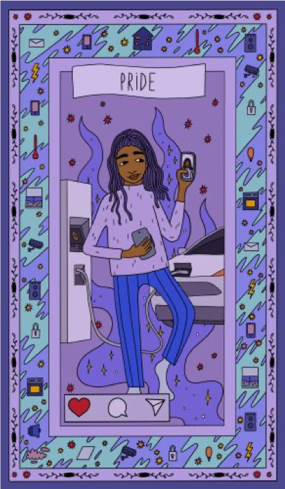

This card depicts a group of people in awe of smart lightbulbs, which can be remotely controlled using various colour settings. In the background, we see a pile of old 'regular' lightbulbs being discarded. The Amazement card is a symbol of profound awe and wonder. Depicting figures with eyes widened in astonishment, it signifies a moment of revelation and awakening. This card reminds you to be receptive to the wonders of science and technology. Stay present and fully engage with the enchanting journey unfolding before you! However, we caution you, dear Reader, behind the joyful eyes of Amazement lies the neglect and abandon of old ideas, objects, and relationships.

The Comfort card portrays a serene scene of a person experiencing the "joy of missing out" as they decide to spend their evening at home with their favourite music and TV shows. The caption states "sorry, I can't make it to your party". When this card graces your reading, it signifies a period of emotional respite from the world full of obstacles and haste. It serves as a reminder to seek comfort in the midst of life's challenges,
drawing upon your favourite possessions and the support of loved ones. The Comfort card reminds you that you are deserving of love, peace, and tenderness, and it encourages you to extend that same compassion and comfort to others in need. When encountering other people seeking comfort in their gadgets or entertainment, restrain your judgement as they might be in the middle of a crisis.

The Frustration card portrays a figure with a tense expression, signalling their dissatisfaction with the surrounding technologies, especially cyber security solutions. We can see messages like "wrong password!" or "what's your mother's maiden name?". The card encourages you to be honest with yourself about what is causing discontent and to find constructive ways to release pent-up emotions. Instead of succumbing to negative feeling, view frustration as an opportunity for growth and learning. Seek support from others, as their perspectives may shed light on new solutions and offer comfort during challenging times. The Frustration card serves as a reminder of your inner ability to transform your anger into a constructive response. Ultimately, you have the power to influence, choose, and reject technologies around you.

The Frugality card embodies the essence of prudent and mindful resourcefulness. The user's app sends them a message: "congratulations, you saved 45% of your energy bills this week!". Depicting a figure drastically reducing their energy consumption, this card symbolises the value of restraint and financial management. Frugality encourages you to assess your spending habits and eliminate unnecessary expenses, allowing you to focus on what truly matters and to build a stable foundation for the future. This card also emphasizes the significance of being resourceful and finding creative solutions to problems. Make use of deals, discounts and smart technologies when working on your energy consumption. However, there might be a high emotional price to pay when encountering Frugality. Do not ever compromise on your health and well-being.

The Guilt card embodies a sombre and weighty emotion, illustrating a figure burdened by remorse about their lifestyle. Various smart home apps prompt them "you walked 31% less this week!" or "increase heating?". In the age of digital technologies tracking and comparing us, it’s easy to feel like we don’t eat, exercise or consume well enough. When this card appears in a reading, it serves as a powerful reminder to acknowledge any past decisions that may be haunting you. It urges you to take responsibility for your actions, without succumbing to self-condemnation. Guilt can be a sign of a desire to do better, but it can also become a debilitating force that hinders personal growth and inner peace. Remember, nobody is perfect, and making mistakes is an inherent part of being human. Above all, consider the role of technologies in your feelings of guilt. How can you learn about your energy consumption, diet or travel habits while avoiding the paralysing embrace of Guilt?

The Loneliness card depicts a solitary figure in a late night urban landscape, reflecting on a profound sense of isolation and emotional detachment. The feeling of loneliness is heightened by the automated messages received, such as "hot singles in your area!" or "feeling lonely? contact our bot". When this card appears in a reading, it serves as a reminder to acknowledge and explore the feelings of loneliness that may be present in your life. While loneliness can be challenging, it also presents an opportunity for profound growth and self-discovery. Remember, you are not alone in experiencing loneliness! Seek out circumstances to form meaningful connections and enrich your life with fulfilling interests. You may use digital technologies to forge those connections or quite the opposite – you may prefer to focus your energy away from the screen.

The Obsession card portrays a figure fixated on a single point, consumed by an all-encompassing focus on reducing their energy bill, even though they only managed to save 32 pence this week. This card symbolises an overwhelming preoccupation with a particular desire, person, or goal. Digital technologies can sometimes fuel Obsession as they allow to monitor, quantify and analyse. Examine your habits of tracking metrics and whether there are important aspects in your life which cannot be captured by your smart devices. Obsession can blind us to other aspects of life, leading to imbalance and neglect of essential responsibilities and relationships. This card prompts you to reflect on your intense dedication: is it healthy or is it becoming detrimental to your well-being?

The Pride card represents a moment of self-assurance and accomplishment. It depicts a person standing tall in front of their electric vehicle, while proudly sharing their sustainable purchase with friends on social media. When this card appears in a reading, it signifies a time to acknowledge your achievements and talents. This card encourages you to honour your strengths without arrogance or hubris. Embodying the positive aspects of pride can boost your self-esteem, allowing you to approach challenges with confidence. However, beware of excessive pride that might lead to arrogance or a lack of empathy for others. The Pride card encourages you to find a balanced sense of self-worth, rooted the respect you show to others. If you’re active on social media, consider sharing both successes and challenges to convey a realistic image of yourself.

In this card, two faces of the same women are depicted. At first, she's excited about the potential to save the planet with her smart toaster. But then, she tragically realises her efforts mean little in the context of oil production by large corporations. The "Disillusionment" card signifies a critical moment of awakening, where false beliefs are shattered, revealing the ugly truth. Though it can be unsettling, this card is a catalyst for personal growth and transformation. What will you do if faced with Disillusionment?

The "Wrath" card is a symbol of intense anger, illustrated with a spiky-haired man hammering his computer. It represents a situation where emotions have reached a boiling point, and rash actions may be taken. This card serves as a warning to exercise caution and control in the face of anger and to seek constructive ways to address conflicts rather than giving in to destructive impulses. Next time when your 'computer says no', perhaps you could take a deep breath, re-trace your steps and stay away from heavy and sharp objects!

The "Pressure" card depicts an elderly and ill person who is prompted to share their personal data by their energy provider. They're afraid the data might be mis-used by their supplier as they heat their home to 25 degrees due to health reasons. The card signifies a period where external demands and expectations are mounting, potentially pushing an individual to their limits. This card serves as a reminder to take a step back, breathe, and find healthy ways to manage the stressors in your life. It advises seeking support as well as setting boundaries.

In the "Relinquishment" card, we don't see a protagonist other than their legs stretched on a hammock. They have given up and switched off, both in a metaphorical and a literal sense. The "Relinquishment" card represents a moment of surrender and letting go. This card suggests that by giving up control, you can find inner peace and freedom from burdens or anxieties. It's important, however, to seek influence over spheres of life you can still control!

The "Peace of Mind" card depicts a woman sleeping soundly against the backdrop of the full moon. She feels protected by cyber security technologies on her computer. This card suggests that you have found a sense of calm amidst life's chaos, and your mind is at ease. It encourages you to cherish this period of contentment and use it as a foundation to make clear, rational decisions and navigate life's challenges with grace. Which technologies let you sleep soundly?

The "Paranoia" card is a symbol of intense suspicion, depicted as a young man fearful over imaginary eyes watching him. The man is so anxious, he's considering deleting all his personal accounts. The card signifies a period where irrational thoughts and mistrust dominate one's mind, leading to a sense of isolation and unease. This card serves as a warning to address unfounded fears and seek clarity in situations rather than succumbing to irrational paranoia. On the other hand, given 'big tech' poor privacy records, perhaps some of his fears are justified?

The "Hope" card shows a map of the UK with various climate-friendly initiatives, like railways, cycling, renewable power or veg farming. There are no individuals on the card, as hope is seen as a political project, mostly in the hands of govermnents. The card represents a time of inspiration, faith, and the belief that better days are on the horizon. With enough political will, energy digitalisation could bring about hope and help to tackle climate change.

The "Numbness" card embodies a state of emotional detachment, where the protagonist is portrayed with a cloud around him. Perhaps the cloud acts as a defense mechanism against overwhelming emotions hidden in the subconscious. This card encourages you to acknowledge and address the underlying causes of this numbness, as it can hinder your ability to fully engage with life and relationships. Remember to take small steps in the path to connection with one's feelings - perhaps an art showcase could be a good way to start?

The "Absolute Sheer Confusion" card embodies a state of profound bewilderment and disarray, with so many technologies around us, it can be difficult to make sense of the whole landscape. It signifies a moment in your life when clarity seems elusive, and you may find yourself overwhelmed by a maze of conflicting thoughts and emotions. This card encourages you to acknowledge this confusion without judgment, recognizing that it's a natural part of the human experience. It advises taking a step back, seeking guidance or counsel in trusted experts. Why don't you speak to one of the members of our team? :D

The "Apathy" card represents a period of emotional detachment The boy depicted is not interested in energy or sustainability, as he'd rather listened to the music on his headphones. The card signifies a time when you may feel emotionally disconnected from the world around you, lacking motivation or enthusiasm. Treat yourself gently - your apathy might be a symptom of a burnout. Find time to calmly reflect on the source of vitality in your life - when is the last time you felt energised?

The "Double Bind" card symbolises a challenging and perplexing situation in which you feel trapped between conflicting demands or expectations. Will AI harm or save the planet? This card signifies a dilemma where any decision or action you take appears to have negative consequences. This card serves as a reminder that sometimes, there are no easy solutions, and it encourages you to seek creative and unconventional ways to navigate this complex situation. It advises you to consider your values and priorities carefully, weigh your options, and make choices that align with your true self, even if they break free from conventional norms or expectations.

The "Incomprehension" card represents a state of deep confusion and a lack of understanding. An elderly man with a string of zeroes, ones and question marks is depicted, wondering about how to use his appliances. This card serves as a reminder to be patient with yourself and others around you and to seek clarity through further communication, help from support staff or user manuals. It encourages you to acknowledge that not everything can be immediately comprehended, and sometimes, time and effort are needed to unravel the mysteries before you. At the same time, the card raises a provocation: how comprehensible and accessible should digital technologies be?

The "Loneliness" card makes a reference to a popular Wojak meme "they don't know...". A stick figure man is depicted, surrounded by dancing couples, who don't pay him any attention. The man is aware of the danger AI poses to the society but he's alone in that knowledge. This card serves as a reminder to acknowledge your feelings of loneliness and to seek connection, when discomfort arises. Perhaps there are people around you who share your concerns?

The "Addiction" card is depicted as a bunch of phone zombies with their eyes glued to thier smart phones. The card signifies a compulsive attachment to technology that is using a lot of your time and energy. It suggests that it's time to evaluate whether this obsession is bringing joy or causing harm. This card serves as a warning to confront your subconscious habits and the underlying issues driving them.

The "Leeched!" card symbolises a situation in which your time, money or private data are being drained by companies providing you with smart energy technologies. You need to recognise and address the snakes which may be negatively impacting your well-being! Remeber to set your boundaries - you do not have to give out your personal information or purchase premium subscriptions! The card encourages you to reclaim your power and remove those who are excessively taking from your life without offering anything in return.

The "(Dis)connection" card encapsulates the ebb and flow of relationships between humans and technologies. It signifies a period where you may experience both moments of distance and moments of deep connection with others. This card encourages you to embrace this complex and ambivalent dynamic. It prompts you to appreciate the valuable connections that bring joy and personal growth while also recognising the need to navigate through challenging moments, reminding you that both disconnection and reconnection are part of the journey toward a deeper understanding of your place on this planet.

The "Conflict!" card is a symbol of intense discord and tension over the role of technologies in tackling the climate crisis. Opposing forces or interests are clashing, potentially leading to confrontation and strife - is AI a part of the solution or a part of the problem? This card serves as a warning to address the conflict directly, seeking resolution through open communication and compromise. What else should you learn about digital technologies to resolve your conflicting emotions?

The "Optimism" card shows belief in a better future for techonlogy and mankind

The "Dependent" card shows potential for severe adrenaline addiction to smartphone notifications

Beginning the conversation about technology as we move forward into a new age

Love is all around us in a world looked over by benevolent machines

After the hydrogen runs out, there will be a period of 2-3 billion years whereby the sun will go through the phases of star death. Eventually it will become a black dwarf.

"Happiness is when what you think, what you say, and what you do are in harmony." —Mahatma Gandhi

Eventaully the world web will connect all things at a less than light delay.

Nothing will be left but the void which binds after the eventual heat death of the universe.

You will find yourself in the city of the future surrounded by everything you have come to love and hate.